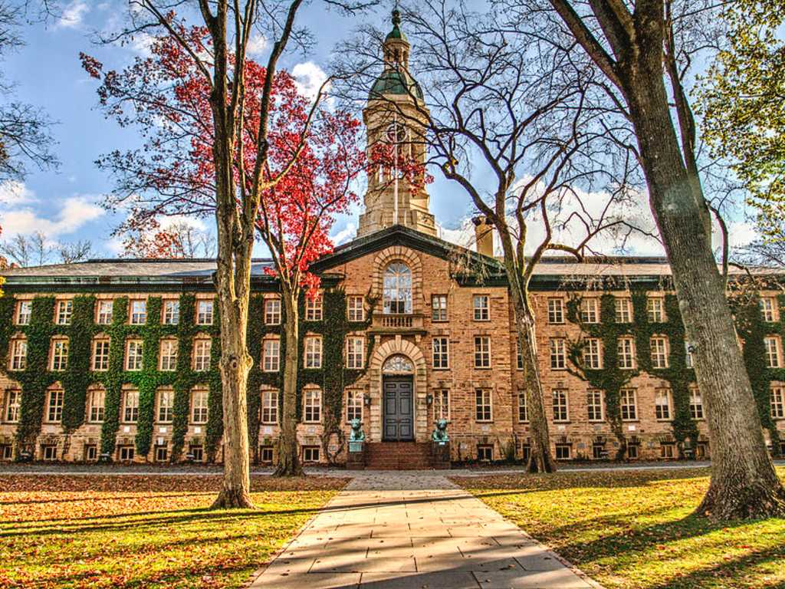

World University Rankings 2025
Explore the top ranked Universities in the world
Discover the top universities worldwide with the Times Higher Education World University Rankings 2025. This year, we have ranked more than 2,000 institutions from 115 countries and territories.
University rankings 2025: key insights
- Oxford holds on to the top spot for the ninth consecutive year, bolstered by significant improvements in industry engagement and teaching.
- MIT rises to second place, overtaking Stanford, which drops to sixth.
- China edges closer to the top 10, further boosting its global research influence.
- Australia's top five universities all slip down the rankings, due to declining reputation and international outlook.
- Three new countries join the top 200 - Brazil, Saudi Arabia and the United Arab Emirates - highlighting the rise of emerging markets in higher education.
Explore the table below to discover the full rankings and how universities around the world are performing this year.
Recognised as the world's most comprehensive evaluation of university performance, our latest WUR 3.0 methodology includes 18 carefully calibrated indicators to assess institutions across five key areas: teaching, research environment, research quality, industry engagement and international outlook.
The 2025 rankings includes 2,092 ranked universities. There are 185 new entries when compared with last year.
Overall, we collected 472,694 datapoints from 2,860 institutions that submitted data.
University of Oxford
The University of Oxford is a collegiate research university in Oxford, England. There is evidence of teaching as early as 1096, making it the oldest university in the English-speaking world and the world's second-oldest university in continuous operation.
Massachussets Institute of Technology -MIT-
The Massachusetts Institute of Technology is a private research university in Cambridge, Massachusetts, United States. Established in 1861, MIT has played a significant role in the development of many areas of modern technology and science.
Harvard University

Harvard University is a private Ivy League research university in Cambridge, Massachusetts, United States. Founded October 28, 1636, and named for its first benefactor, the Puritan clergyman John Harvard, it is the oldest institution of higher learning in the United States.
Princeton University
Princeton University is a private Ivy League research university in Princeton, New Jersey, United States. Founded in 1746 in Elizabeth as the College of New Jersey, Princeton is the fourth-oldest institution of higher education in the United States and one of the nine colonial colleges chartered before the American Revolution. It officially became a university in 1896 and was subsequently renamed Princeton University.
University of Cambridge
The University of Cambridge is a public collegiate research university in Cambridge, England. Founded in 1209, the University of Cambridge is the world's third-oldest university in continuous operation.
| Rank | Name | Country | Overall | Teaching | Research Environment | Research Quality | Industry | International Outlook |
|---|---|---|---|---|---|---|---|---|
| 1 | University of Oxford | United Kingdom | 98.5 | 96.8 | 100.0 | 98.8 | 99.6 | 97.3 |
| 2 | Massachussets Institute of Technology | United States | 98.1 | 99.2 | 96.0 | 99.7 | 100.0 | 93.8 |
| 3 | Harvard University | United States | 97.7 | 97.3 | 99.9 | 99.3 | 85.7 | 90.1 |
| 4 | Princeton University | United States | 97.5 | 98.3 | 98.0 | 98.9 | 96.9 | 87.4 |
| 5 | University of Cambridge | United Kingdom | 97.4 | 95.9 | 99.9 | 97.6 | 88.4 | 97.1 |